◆「情人節2017Pick Up召喚」期間◆
期間：2017年2月8日(三) 18:00～2月22日(三) 12:59
以期間限定舉辦「情人節2017Pick Up召喚」！
新登場Servant「★5(SSR)謎之女主角Ｘ〔Alter〕」以期間限定登場！
另外這次是只有女性Servant為召喚對象的「女性Servant1」「女性Servant2」、只有男性Servant為召喚對象的「男性Servant」3種類的召喚同時舉辦。
在「女性Servant1」「女性Servant2」★5(SSR)女性Servant以每日交替Pick Up！
詳情請在聖晶石召喚畫面左下的召喚詳細確認。
※謎之女主角Ｘ〔Alter〕只能在「女性Servant1」「女性Servant2」召喚。
※謎之女主角Ｘ〔Alter〕在Pick Up召喚期間結束後，不會追加到故事召喚。
裝備在「女性Servant1」「女性Servant2」為召喚對象的期間限定概念禮裝「★5(SSR)キュート・オランジェット」「★4(SR)チョコ・エンゼル」「★3(R)ブレスフル・タイム」及在「男性Servant」為召喚對象的期間限定概念禮裝「★5(SSR)ショコラティエ」「★4(SR)ビター・ブラック」「★3(R)勝者の余裕」的話，會提升活動専用道具的掉落獲得數。
另外，2月17日(五) 23:00～2月18日(六) 22:59的期間中2016年的「情人節Pick Up召喚」限定概念禮裝復刻Pick Up！※2/7(二)修正
裝備2016年的「情人節Pick Up召喚」限定概念禮裝「★5(SSR)ストリート・チョコメイド」「★4(SR)キッチン☆パティシエール」「★3(R)涙の情人節道場」的話，也會提升活動専用道具的掉落獲得數。
※「★3(R)ブレスフル・タイム」「★3(R)勝者の余裕」「★3(R)涙の情人節道場」在各自的Pick Up期間中，也能在友情點數召喚獲得。
Pick Up期間中，期間限定Servant、Pick Up Servant、期間限定概念禮裝的出現機率提升！
10次召喚中確定1張★4(SR)以上和確定1位★3(R)以上的Servant！
※確定★4(SR)以上包含Servant和概念禮裝。
※所謂「出現機率提升」意指比同稀有度的Servant出現機率更高的設定。
◆「情人節2017Pick Up召喚 女性Servant1」Pick Up內容◆
| Pick Up期間 | 每日交替Pick Up內容 |
|---|---|
| 2月8日(三) 18:00～ 2月10日(五) 22:59 |
謎之女主角Ｘ〔Alter〕 「情人節2017Pick Up召喚」限定概念禮裝 「★5(SSR)キュート・オランジェット」 「★4(SR)チョコ・エンゼル」 「★3(R)ブレスフル・タイム」 |
| 2月10日(五) 23:00～ 2月11日(六) 22:59 |
謎之女主角Ｘ〔Alter〕、阿爾托莉亞・潘德拉剛(Saber) 「情人節2017Pick Up召喚」限定概念禮裝 「★5(SSR)キュート・オランジェット」 「★4(SR)チョコ・エンゼル」 「★3(R)ブレスフル・タイム」 |
| 2月11日(六) 23:00～ 2月12日(日) 22:59 |
謎之女主角Ｘ〔Alter〕、貞德 「情人節2017Pick Up召喚」限定概念禮裝 「★5(SSR)キュート・オランジェット」 「★4(SR)チョコ・エンゼル」 「★3(R)ブレスフル・タイム」 |
| 2月12日(日) 23:00～ 2月13日(一) 22:59 |
謎之女主角Ｘ〔Alter〕、玉藻前(Caster) 「情人節2017Pick Up召喚」限定概念禮裝 「★5(SSR)キュート・オランジェット」 「★4(SR)チョコ・エンゼル」 「★3(R)ブレスフル・タイム」 |
| 2月13日(一) 23:00～ 2月14日(二) 22:59 |
謎之女主角Ｘ〔Alter〕、開膛手傑克 「情人節2017Pick Up召喚」限定概念禮裝 「★5(SSR)キュート・オランジェット」 「★4(SR)チョコ・エンゼル」 「★3(R)ブレスフル・タイム」 |
| 2月14日(二) 23:00～ 2月15日(三) 22:59 |
謎之女主角Ｘ〔Alter〕、南丁格爾 「情人節2017Pick Up召喚」限定概念禮裝 「★5(SSR)キュート・オランジェット」 「★4(SR)チョコ・エンゼル」 「★3(R)ブレスフル・タイム」 |
| 2月15日(三) 23:00～ 2月16日(四) 22:59 |
謎之女主角Ｘ〔Alter〕、玄奘三藏 「情人節2017Pick Up召喚」限定概念禮裝 「★5(SSR)キュート・オランジェット」 「★4(SR)チョコ・エンゼル」 「★3(R)ブレスフル・タイム」 |
| 2月16日(四) 23:00～ 2月17日(五) 22:59 |
謎之女主角Ｘ〔Alter〕 「情人節2017Pick Up召喚」限定概念禮裝 「★5(SSR)キュート・オランジェット」 「★4(SR)チョコ・エンゼル」 「★3(R)ブレスフル・タイム」 |
| 2月17日(五) 23:00～ 2月18日(六) 22:59 |
謎之女主角Ｘ〔Alter〕 2016年「情人節Pick Up召喚」限定概念禮裝 「★5(SSR)ストリート・チョコメイド」 「★4(SR)キッチン☆パティシエール」 「★3(R)涙の情人節道場」 |
| 2月18日(六) 23:00～ 2月22日(三) 12:59 |
謎之女主角Ｘ〔Alter〕 「情人節2017Pick Up召喚」限定概念禮裝 「★5(SSR)キュート・オランジェット」 「★4(SR)チョコ・エンゼル」 「★3(R)ブレスフル・タイム」 |
※以每日交替變更Pick Up Servant及Pick Up概念禮裝。在Pick Up對象的期間以外也能入手Pick Up Servant。
※請注意友情點數召喚更新時會進入資料更新。
◆「情人節2017Pick Up召喚 女性Servant2」Pick Up內容◆
| Pick Up期間 | 每日交替Pick Up內容 |
|---|---|
| 2月10日(五) 23:00～ 2月11日(六) 22:59 |
謎之女主角Ｘ〔Alter〕、阿提拉 「情人節2017Pick Up召喚」限定概念禮裝 「★5(SSR)キュート・オランジェット」 「★4(SR)チョコ・エンゼル」 「★3(R)ブレスフル・タイム」 |
| 2月11日(六) 23:00～ 2月12日(日) 22:59 |
謎之女主角Ｘ〔Alter〕、俄里翁 「情人節2017Pick Up召喚」限定概念禮裝 「★5(SSR)キュート・オランジェット」 「★4(SR)チョコ・エンゼル」 「★3(R)ブレスフル・タイム」 |
| 2月12日(日) 23:00～ 2月13日(一) 22:59 |
謎之女主角Ｘ〔Alter〕、弗朗西斯・德雷克 「情人節2017Pick Up召喚」限定概念禮裝 「★5(SSR)キュート・オランジェット」 「★4(SR)チョコ・エンゼル」 「★3(R)ブレスフル・タイム」 |
| 2月13日(一) 23:00～ 2月14日(二) 22:59 |
謎之女主角Ｘ〔Alter〕、莫德雷德 「情人節2017Pick Up召喚」限定概念禮裝 「★5(SSR)キュート・オランジェット」 「★4(SR)チョコ・エンゼル」 「★3(R)ブレスフル・タイム」 |
| 2月14日(二) 23:00～ 2月15日(三) 22:59 |
謎之女主角Ｘ〔Alter〕、女王梅芙 「情人節2017Pick Up召喚」限定概念禮裝 「★5(SSR)キュート・オランジェット」 「★4(SR)チョコ・エンゼル」 「★3(R)ブレスフル・タイム」 |
| 2月15日(三) 23:00～ 2月16日(四) 22:59 |
謎之女主角Ｘ〔Alter〕、阿爾托莉亞・潘德拉剛(Lancer) 「情人節2017Pick Up召喚」限定概念禮裝 「★5(SSR)キュート・オランジェット」 「★4(SR)チョコ・エンゼル」 「★3(R)ブレスフル・タイム」 |
| 2月16日(四) 23:00～ 2月17日(五) 22:59 |
謎之女主角Ｘ〔Alter〕、魁札爾・科亞特爾 「情人節2017Pick Up召喚」限定概念禮裝 「★5(SSR)キュート・オランジェット」 「★4(SR)チョコ・エンゼル」 「★3(R)ブレスフル・タイム」 |
※以每日交替變更Pick Up Servant及Pick Up概念禮裝。在Pick Up對象的期間以外也能入手Pick Up Servant。
※請注意只有「情人節2017Pick Up召喚 女性Servant2」的舉辦期間有所差異。
※Pick Up期間中、女王梅芙、阿爾托莉亞・潘德拉剛(Lancer)、魁札爾・科亞特爾在各章通過前也能入手。
◆「情人節2017Pick Up召喚 男性Servant」召喚對象★5(SSR)Servant◆
| 職階 | 名稱 |
|---|---|
| Archer | 尼古拉・特斯拉 阿周那 |
| Lancer | 迦爾納 恩奇杜 |
| Rider | 奧茲曼迪亞斯 |
| Caster | 諸葛孔明〔埃爾梅羅II世〕 |
| Berserker | 弗拉德三世 庫・夫林〔Alter〕 |
※沒有Servant的每日交替Pick Up。
※在「情人節2017Pick Up召喚 男性Servant」常駐「情人節2017Pick Up召喚」限定概念禮裝「★5(SSR)ショコラティエ」「★4(SR)ビター・ブラック」「★3(R)勝者の余裕」為Pick Up對象。
※Pick Up期間中、尼古拉・特斯拉、庫・夫林〔Alter〕在各章通過前也能入手。
Pick Up期間中，在管理室(ターミナル)會出現謎之女主角Ｘ〔Alter〕體験關卡！
迎接「★5(SSR)謎之女主角Ｘ〔Alter〕」做為支援成員，挑戰期間限定的關卡！
別錯過體驗Servant技能與寶具的機會！
|
◆舉辦期間◆ ◆關卡通過報酬◆ ◆開放條件◆ |
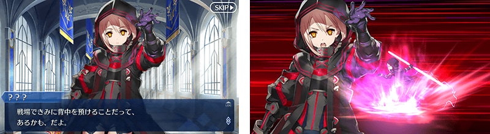
| 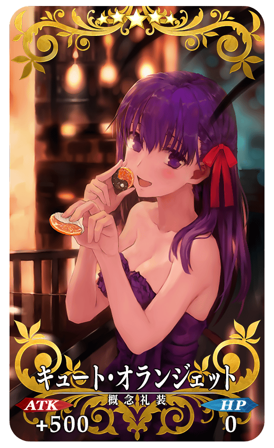 |
★★★★★SSR キュート・オランジェット ATK 500 (最大:2000) HP 0 技能 自身的NP獲得量提升25%＆寶具威力提升15% ＋ 裝備者的對峙職階硬幣巧克力的掉落獲得數增加5個【『復刻：巧克力・女士的大驚小怪』活動期間限定】 |
| 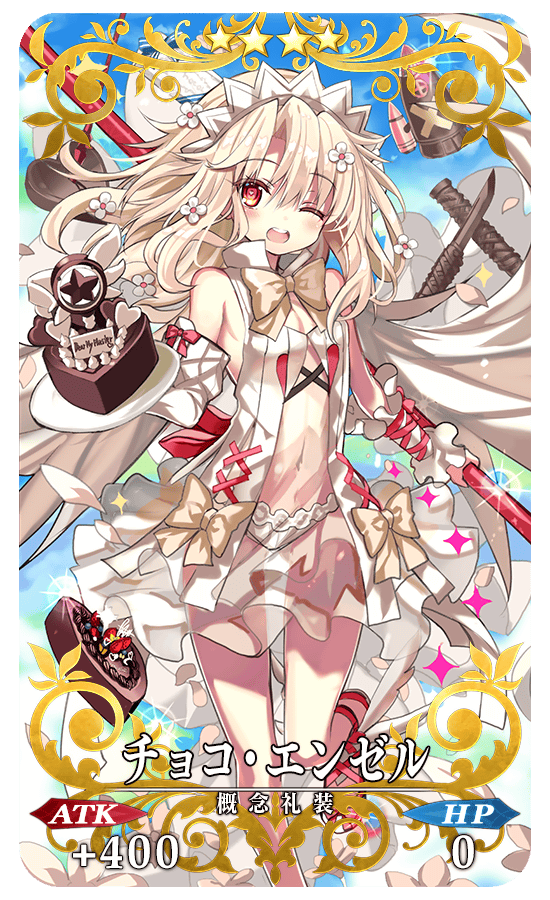 |
★★★★SR チョコ・エンゼル ATK 400 (最大:1500) HP 0 技能 自身的Buster卡性能提升8%＆NP獲得量提升15% ＋ 裝備者的對峙職階硬幣巧克力的掉落獲得數增加3個【『復刻：巧克力・女士的大驚小怪』活動期間限定】 |
| 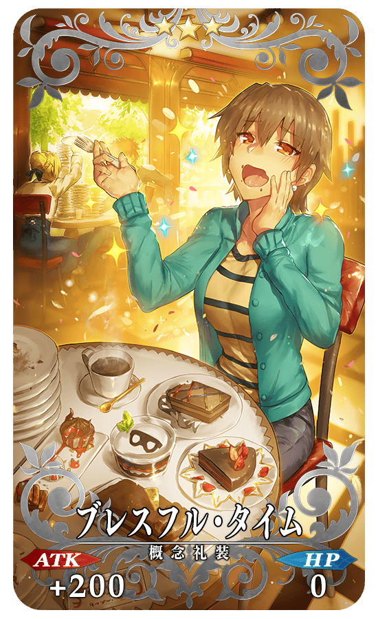 |
★★★R ブレスフル・タイム ATK 200 (最大:1000) HP 0 技能 自身的HP回復量提升5%＆星星發生率提升5% ＋ 裝備者的對峙職階硬幣巧克力的掉落獲得數增加1個【『復刻：巧克力・女士的大驚小怪』活動期間限定】 |
| 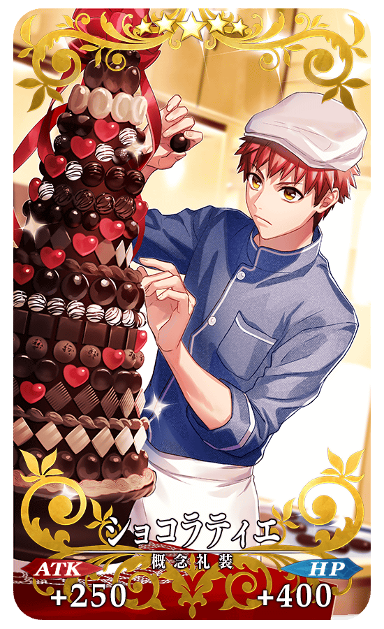 |
★★★★★SSR ショコラティエ ATK 250 (最大:1000) HP 400 (最大:1600) 技能 自身的Arts卡性能提升15%＆賦予每回合星星3個獲得狀態 ＋ 裝備者的對峙職階硬幣巧克力的掉落獲得數增加5個【『復刻：巧克力・女士的大驚小怪』活動期間限定】 |
| 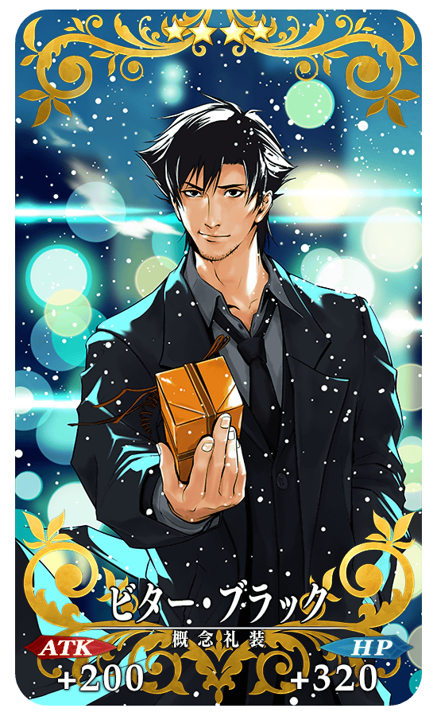 |
★★★★SR ビター・ブラック ATK 200 (最大:750) HP 320 (最大:1200) 技能 自身的HP回復量提升15%＆NP獲得量提升15% ＋ 裝備者的對峙職階硬幣巧克力的掉落獲得數增加3個【『復刻：巧克力・女士的大驚小怪』活動期間限定】 |
| 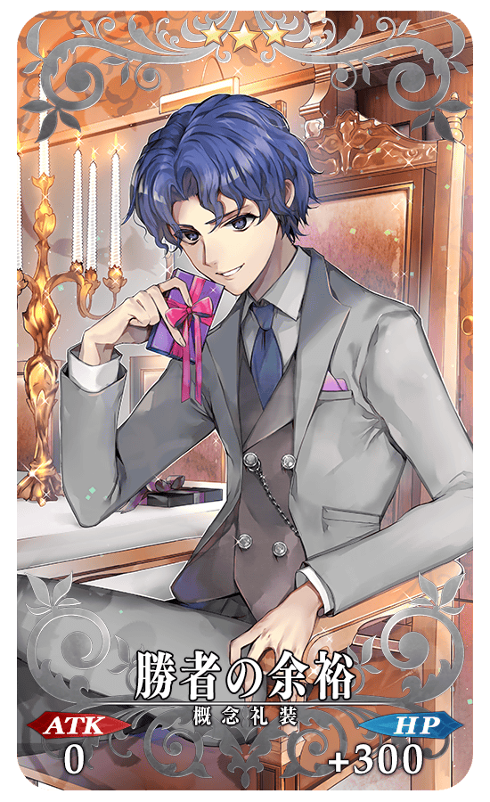 |
★★★R 勝者の余裕 ATK 0 HP 300 (最大:1500) 技能 賦予自身的傷害減免100狀態＆星星發生率提升5% ＋ 裝備者的對峙職階硬幣巧克力的掉落獲得數增加1個【『復刻：巧克力・女士的大驚小怪』活動期間限定】 |
 |
★★★★★SSR ストリート・チョコメイド ATK 250 (最大:1000) HP 400 (最大:1600) 技能 自身的Quick卡性能提升10%＆Arts卡性能提升10%＆HP回復量提升20% ＋ 與裝備Servant的職階相同硬幣巧克力的掉落獲得數增加5個【『復刻：巧克力・女士的大驚小怪』活動期間限定】  |
 |
★★★★SR キッチン☆パティシエール ATK 200 (最大:750) HP 320 (最大:1200) 技能 自身的星星發生率提升15%＆NP獲得量提升15% ＋ 與裝備Servant的職階相同硬幣巧克力的掉落獲得數增加3個【『復刻：巧克力・女士的大驚小怪』活動期間限定】 |
 |
★★★R 涙の情人節道場 ATK 200 (最大:1000) HP 0 技能 對自身賦予必中狀態＆賦予每回合NP3%獲得狀態＆魅惑耐性下降10%【副作用】 ＋ 與裝備Servant的職階相同硬幣巧克力的掉落獲得數增加1個【『復刻：巧克力・女士的大驚小怪』活動期間限定】 |
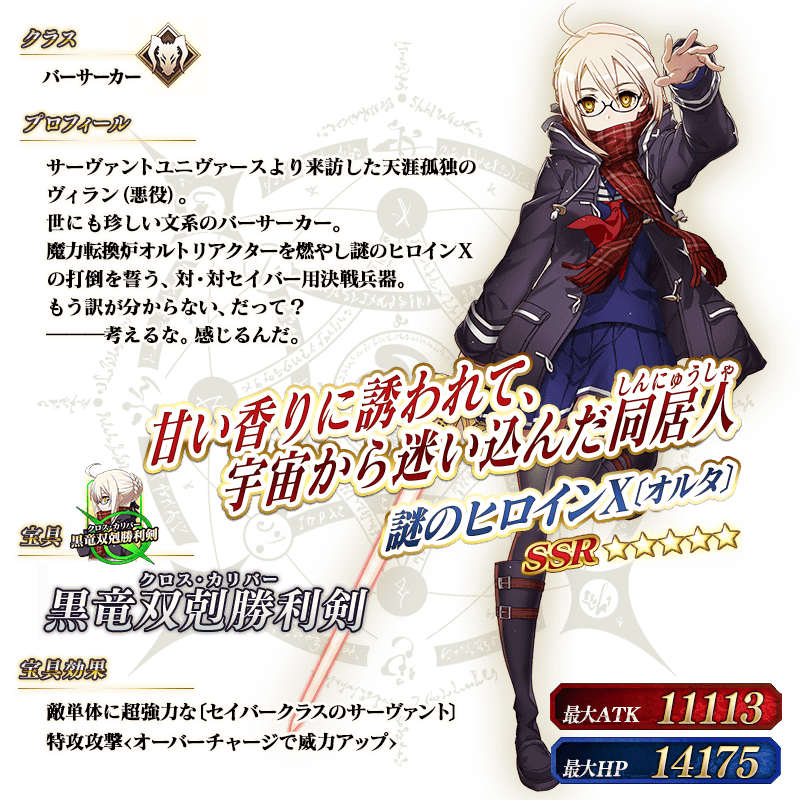
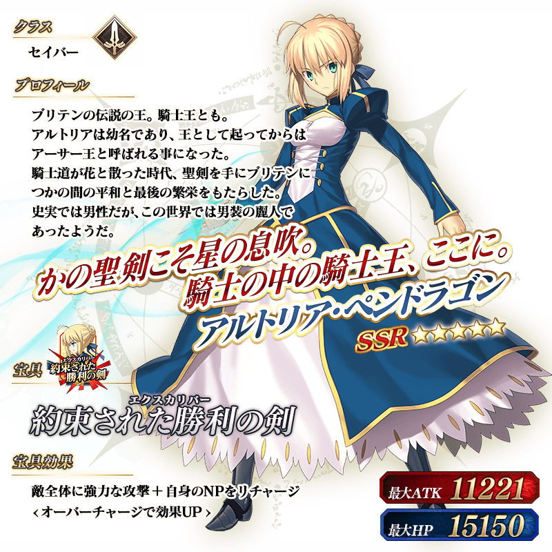

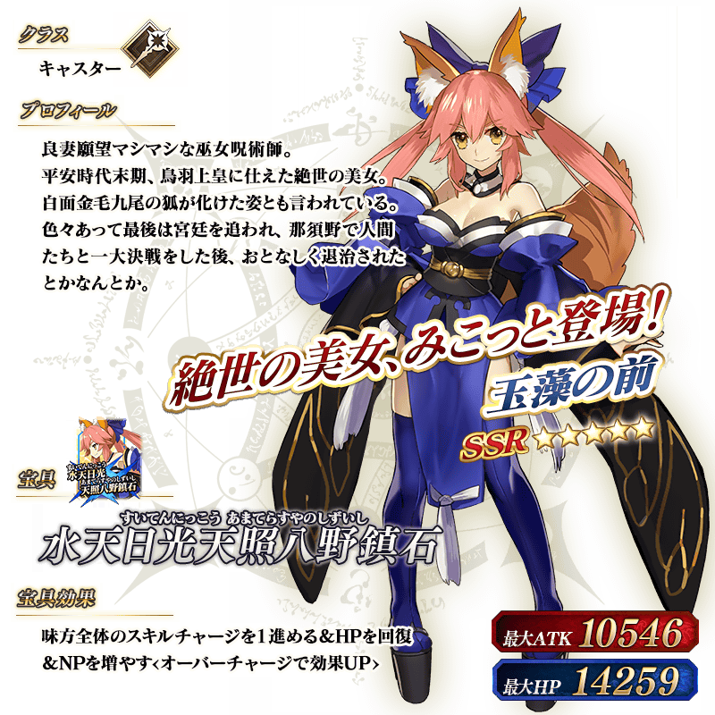


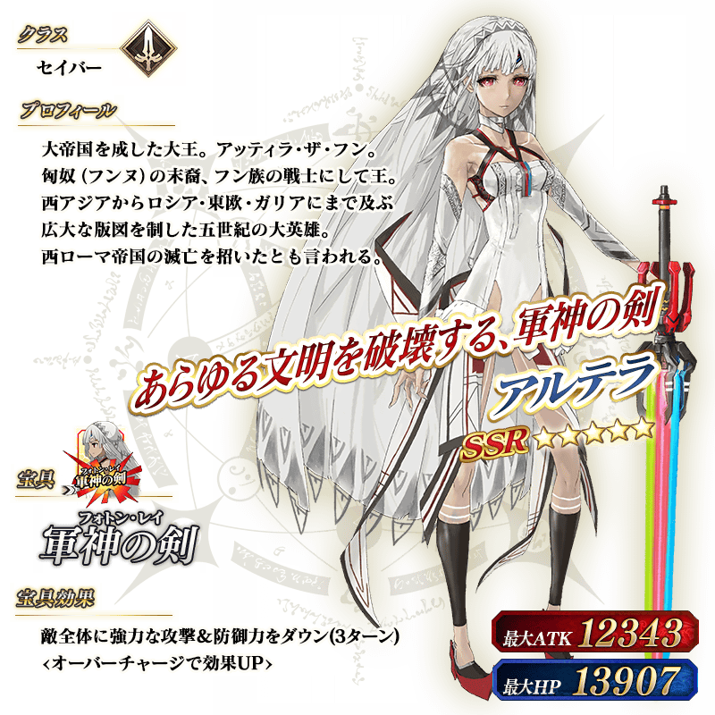


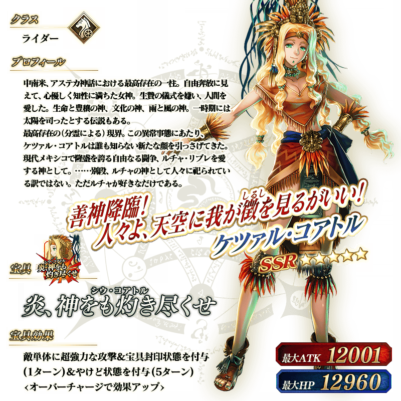